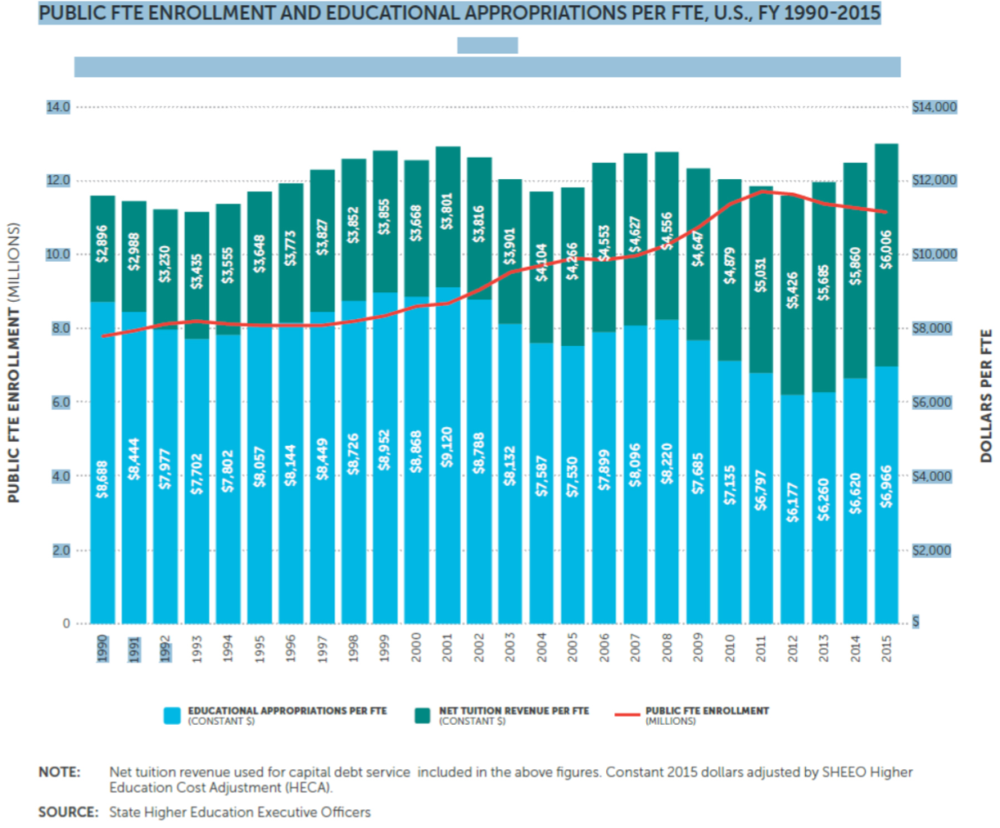
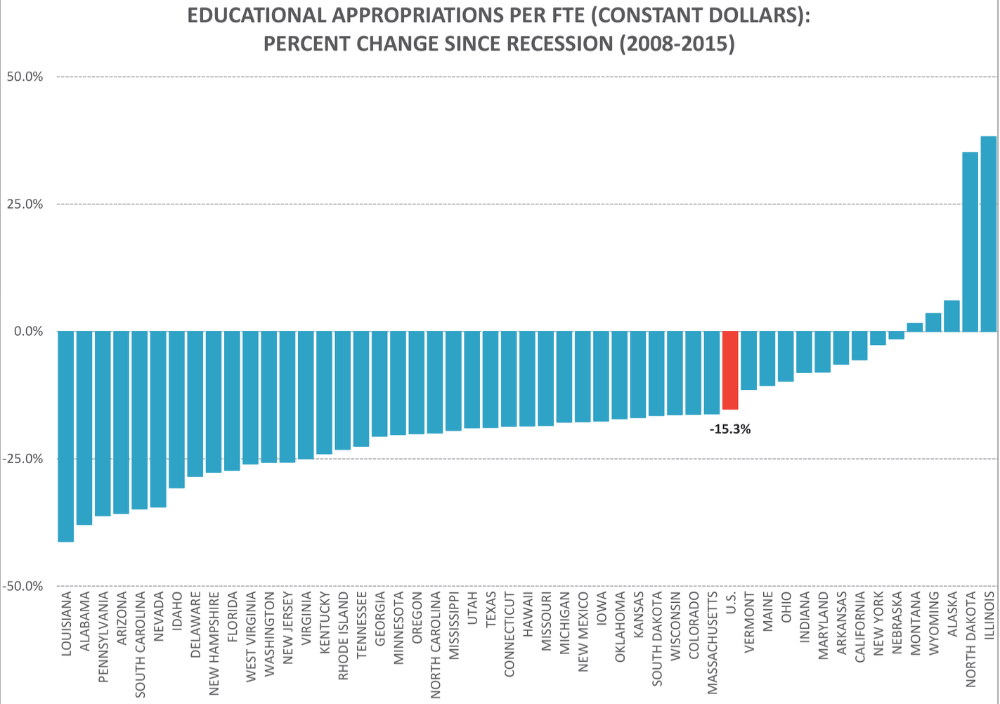
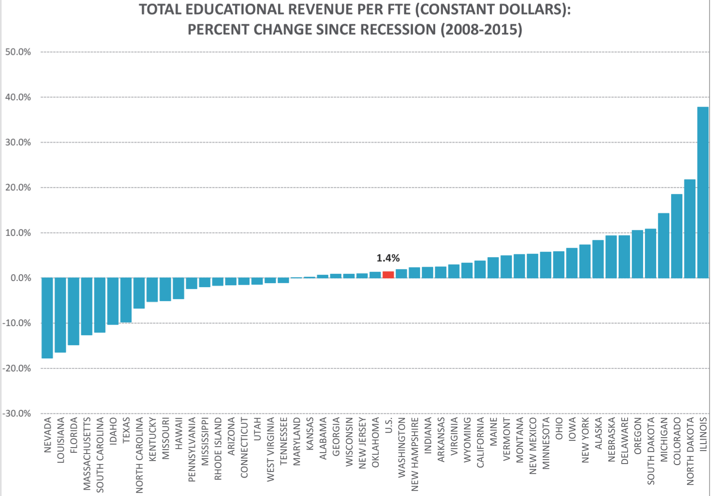
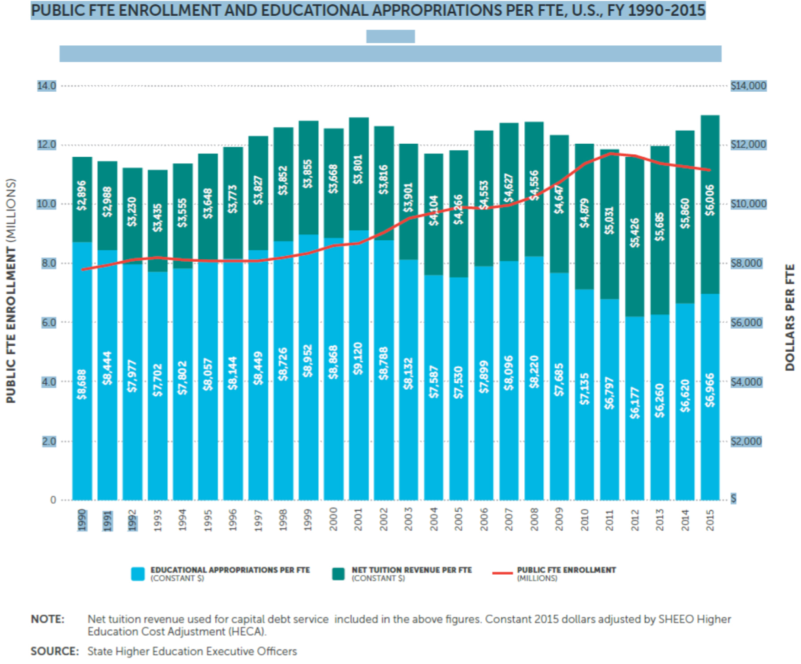
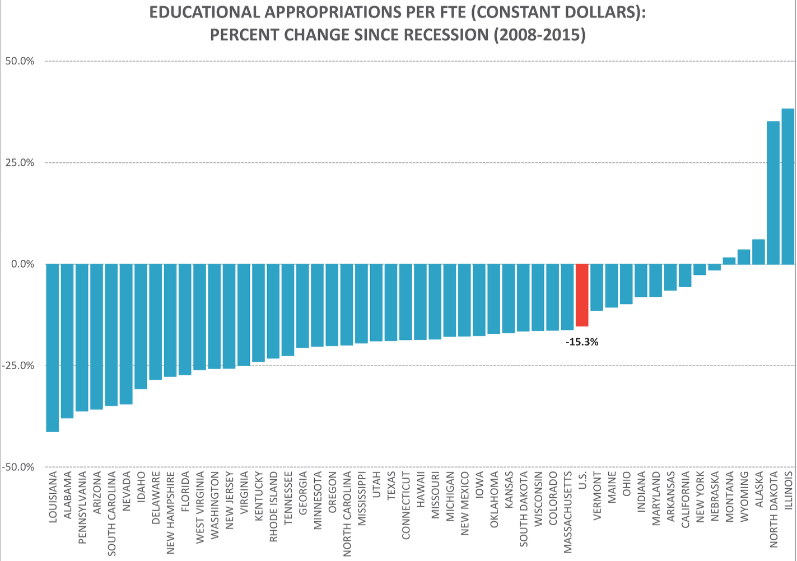
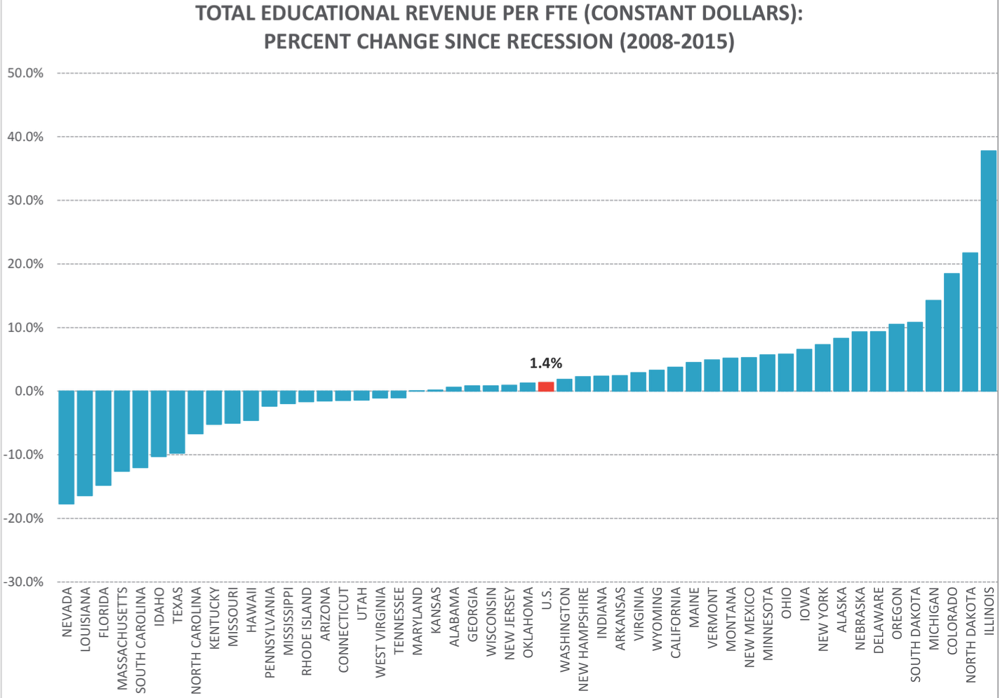

-
More
Environmental Factors: Economic Conditions
Video Lecture
A discussion and explanation of how state funding of higher education is impaced by the environmental conditions of the states economic conditions.
Graphs, Tables, and More
The following graphs and tables show how state funding of higher education is affected by economic conditions. Notice impracticular that the biggest decreases come during severe recessions (middle 1990s, and after 2008).
 


Close



Close
-
More
State Organizational Filter: Governance Structure
- Statewide Governing Boards
- Statewide Coordinating Boards
- Local Governing Boards (Single or Multi-institutional)
- P-20 Commissions/Agencies
Lecture Video
Discussion of the different types of statewide governance structures
Table
Breakdown of state governance structures by state.
Close -
More
State Organizational Filter: Regulatory Patterns
- Allocation Procedures
- Enrollment Ceilings
- Appropriation Bill Language
- Funding Ceilings
- Position Control
- Restrictions on the Use of Year-end Fund Balances
- Line-Item Budget Reductions
- Salary Savings Targets
Lecture Video
Discussion of the different ways states regulate state funding of higher education.
Graphs, Tables, and More
Breakdown of state allocation procedures by state.
Close -
More
Allocation Techniques
Lecture Video
Discussion of allocation techniques and factors influencing decisions for allocaion.
Explore Allocation Techniques
For each of the allocation techniques below (not mixed models), explore and complete the activity for each.
- Incremental Budgeting A budget strategy that focuses on percentage adjustments to the existing base rather than on specific priorities
- Formula Budgeting A budget strategy that relies on quantitative measures to distribute resources.
- Performance-based Budgeting A budget strategy that relies on the establishment of specific institutional objectives to justify a portion of base budget resources or incremental resources
- Mixed Models
-
More
Environmental Factors
A number of factors can influence state funding of higher education including number of state institutions at each level (Community College, Public, Private, etc.) and the demographics of the state such as total enrollment.
Excel Spreadsheets
In depth look at the various environmental factors by state. Take a look and see how states vary in their makeup and funding and think about why that might be.
Degree-granting Institutions 2014-15
Appropriations From State and Local Goverments
Graphs and Tables
Overall depiction of sources of funding for non-profit degree granting institutions.
Close -
More
State Budgeting for Higher Education: A Conceptual Framework
Lecture Video
This conceptual framework helps to understand the complexity of state budgeting for higher education, including the context, process, and ultimate product (i.e. the budget).
Close